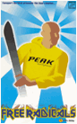
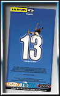

Hvor kult er det ikke å sette seg ned en sen oktoberkveld, mens det regner utenfor, å se på en skifilm, drømme seg bort I en halvtimes tid og kjenne at du virkelig lengter etter vinteren. Her er noen av høstens nyheter på skifilmfronten:


|
Årets feteste skifilmer Hvor kult er det ikke å sette seg ned en sen oktoberkveld, mens det regner utenfor, å se på en skifilm, drømme seg bort I en halvtimes tid og kjenne at du virkelig lengter etter vinteren. Her er noen av høstens nyheter på skifilmfronten: |
|
|

"Free Radicals 3" Den svenske skifilmprodusenten Downfilm, slipper I slutten av oktober den tredje filmen I rekken "Fria Radikaler". Årets film er råere enn de foregående, med enda mer spektakulær skikjøring I ekstremt terreng. Den legendarisk gale puckelpist-åkaren Jesper Rønnbeck er som vanlig med og skuffer som vanlig ikke. For første gang har de også tatt med en norsk telemarkkjører. Lillehamringen Frode Grønvold som vant ekstrem-NM I Riksgrensen I fjor kjører fort og hopper høyt I årets film. Svenske Sverre Liljequist som ble fjerdemann I Ekstrem-VM I Alaska I fjor gutser på med blant annet et rått hopp på akseptable 60 meter I upreparert terreng! Fås kjøpt på Sport Extreme for ca 250 kr.  "13" Poor Boyz-productions følger opp fjorårets suksess "Degenerates" med en ny film full av "New School"-luftakrobatikk. At Kanadenserne kalles seg "The new Canadian Airforce" er ikke uten grunn. De setter helt nye standarder for hva som er mulig med ski på beina, og parkerer snowboard-kjørerne lett. Fås også på Sport Extreme for ca 250 kr. "Warren Miller" For ikke mindre enn 50. Gang har Warren Miller-teamet snekret sammen en ny skifilm. Årets film er en jubileumsfilm som er tatt opp på ulike siter over hele verden. Den kommer til å bli vist på ekstrem-dagen under UKA 99, og torsdag 21. Oktober kl. 19 I auditorium F1 på Gløshaugen. I fjor kom det ikke mindre enn 500 mennesker for å se filmen, så dette bør du ikke gå glipp av. Filmen inneholder vanlig skikjøring, telemark og snowboard. Den fås ikke kjøpt I noen butikker før neste år. Møt opp!!! |